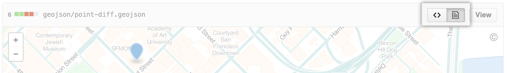
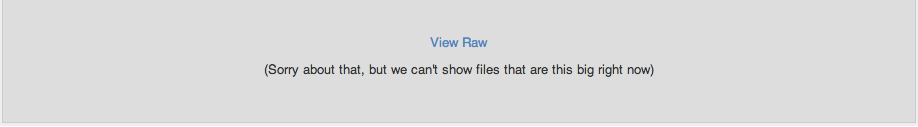

GitHub.com supports rendering geoJSON and topoJSON map files within GitHub repositories. Simply commit the file as you would normally using a .geojson or .topojson extension. Files with a .json extension are also supported, but only if type is set to FeatureCollection, GeometryCollection, or topology. Then, navigate to the path of the geoJSON file on GitHub.com.
When you click the paper icon on the right, you'll also see the changes made to that file as part of a commit.

Geometry Types
Maps on GitHub.com use Leaflet.js and support all the geometry types outlined in the geoJSON spec (Point, LineString, Polygon, MultiPoint, MultiLineString, MultiPolygon, and GeometryCollection). TopoJSON files should be type "Topology" and adhere to the topoJSON spec.
Styling features
You can customize the way features are displayed, such as specifying a particular color or adding a descriptive icon, by passing additional metadata within the geoJSON object's properties. The options are:
-
marker-size-small,medium, orlarge -
marker-color- valid RGB hex color -
marker-symbol- an icon ID from the Maki project or a single alphanumeric character (a-z or 0-9). -
stroke- color of a polygon edge or line (RGB) -
stroke-opacity- opacity of a polygon edge or line (0.0 - 1.0) -
stroke-width- width of a polygon edge or line -
fill- the color of the interior of a polygon (GRB) -
fill-opacity- the opacity of the interior of a polygon (0.0-1.0)
See version 1.1.0 of the open simplestyle spec for more information.
Embedding your map elsewhere
Want to make your geoJSON map available someplace other than GitHub? Simply modify this template, and place it in any HTML page that supports javascript (e.g., GitHub Pages):
<script src="https://embed.github.com/view/geojson/<username>/<repo>/<ref>/<path_to_file>"></script>
For example, if your map's URL is github.com/benbalter/dc-wifi-social/blob/master/bars.geojson, your embed code would be:
<script src="https://embed.github.com/view/geojson/benbalter/dc-wifi-social/master/bars.geojson"></script>
By default, the embedded map 420px x 620px, but you can customize the output by passing height and width variables as parameters at the end, such as ?height=300&width=500.
Note: ref can be a branch (like master), or the hash to an individual commit (like 2391ae).
Clustering
If your map contains a large number of markers (roughly over 750), GitHub will automatically cluster nearby markers at higher zoom levels. Simply click the cluster or zoom in to see individual markers.
Something's up with the underlying map
The underlying map data (street names, roads, etc.) are driven by OpenStreetMap, a collaborative project to create a free editable map of the world. If you notice something's not quite right, since it's open source, simply sign up and submit a fix.
Troubleshooting
If you're having trouble rendering geoJSON files, ensure you have a valid geoJSON file by running it through a geoJSON linter. If your points aren't appearing where you'd expect (e.g., in the middle of the ocean), it's likely that the data is in a projection which is currently unsupported. Currently, GitHub only supports the urn:ogc:def:crs:OGC:1.3:CRS84 projection.
Additionally, if your .geojson file is especially large (over 10 MB), it is not possible to render within the browser. If that's the case, you'll generally see a message that looks something like this:

It may still be possible to render the data by converting the .geojson file to TopoJSON, a compression format that, in some cases, can reduce filesize by up to 80%. Of course, you can always break the file into smaller chunks (such as by state or by year), and store the data as multiple files within the repository.